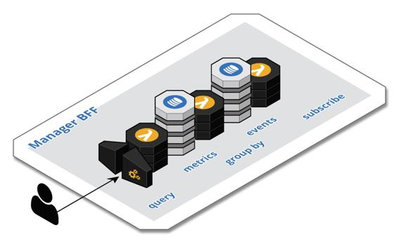

Example – Manager BFF
In any business, it is important to measure and track the work that is performed so that the results can be evaluated against objectives and course corrections made as necessary. Key performance indicators (KPI) are often made available in a manager application.
As depicted in the following figure, a Manager BFF component consists of two out of the three APIs in the Trilateral API pattern. A Manager BFF has an asynchronous API to consume events related to key performance indicators and a synchronous API with queries to retrieve the KPIs and their history. The CQRS pattern is employed to create the metrics materialized views and the API Gateway pattern is leveraged for the synchronous interface.

The key performance indicators are typically stored in a cloud-native key-value store, such as AWS DynamoDB, or a time series database. The CQRS Event Sourced Join technique can be employed to capture and aggregate the metrics and feed the materialized views. The metrics are usually aggregated by day, week, month, and year. The detailed events can be purged periodically as the days are rolled to weeks and months and years. Note that this user experience is different from that of an ad hoc analytics tool that would be supported by its own BFF and different from the work of a data scientist. This user experience delivers answers to a prescribed set of questions. The outcomes of ad hoc analytics and data science may drive the requirements of a Manager BFF as new indicators and algorithms are identified.